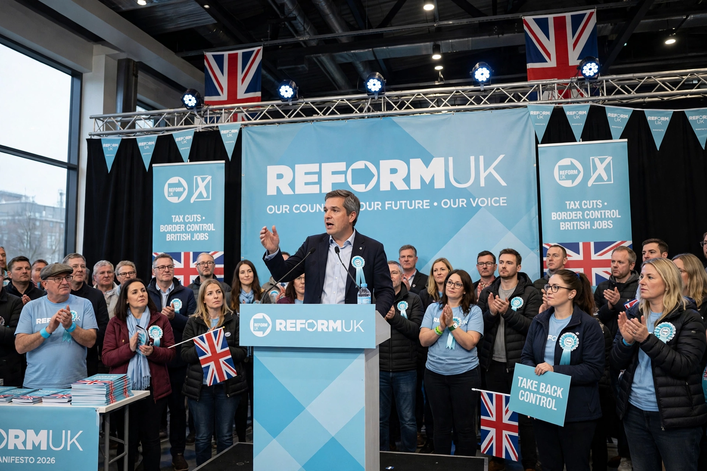

| Reform UK | |
|---|---|
| Leader | Nigel Farage |
| Founded | 23 November 2018 (as the Brexit Party) |
| Headquarters | London, United Kingdom |
| Ideology | Right-wing populism; Euroscepticism |
Reform UK is a right-wing populist political party in the United Kingdom. It was founded as the Brexit Party in 2018 by Nigel Farage and Catherine Blaiklock, won the 2019 European Parliament election in the UK, and was renamed Reform UK in 2021, campaigning on immigration, net zero and institutional reform.
After standing aside for Conservative candidates in 2019, the party relaunched under Richard Tice. Farage returned as leader in June 2024 and was elected MP for Clacton at the 2024 general election, in which the party won five seats and about 14% of the vote. In the 2025 local elections it won hundreds of council seats and control of several councils, and subsequently led many national opinion polls.
Reform UK advocates lower immigration, leaving the European Convention on Human Rights, scrapping net-zero targets, tax cuts, and reform of the NHS and public institutions.